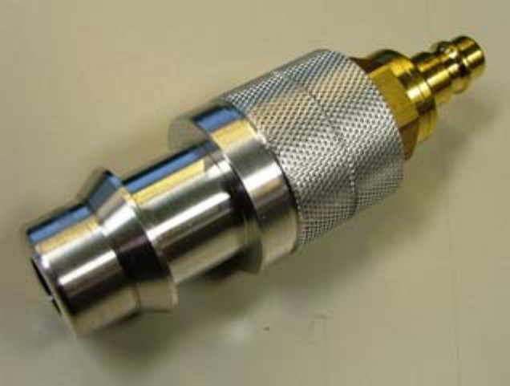
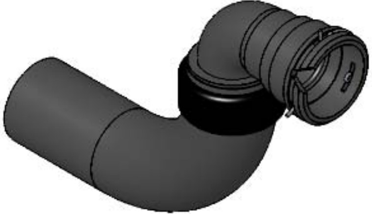
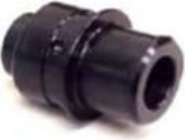

Doc no. MOC-TSB-14-19 // Vol. 14 No. 19 // Oct 21, 2014 // Cooling
Ford Focus Coolant Adapters
New94342
MOC has developed 2 new adapters (Part No. 94342 and 94343) to service the cooling system of a Ford Focus along with any other vehicle that have the same size quick disconnect fitting.
What's new
*In order to connect Part No. 94343 to the Coolant Machine, you must have the universal adapters, which are included in the standard adapter kit.
Contact
For more information, contact the Machine & Equipment Department at 866.244.6621.



Part numbers
| Part No. | Description | Notes |
|---|---|---|
| 94342 | Adapter, Coolant, Male, Ford Focus | |
| 94343 | Adapter, Coolant, Ford Focus |